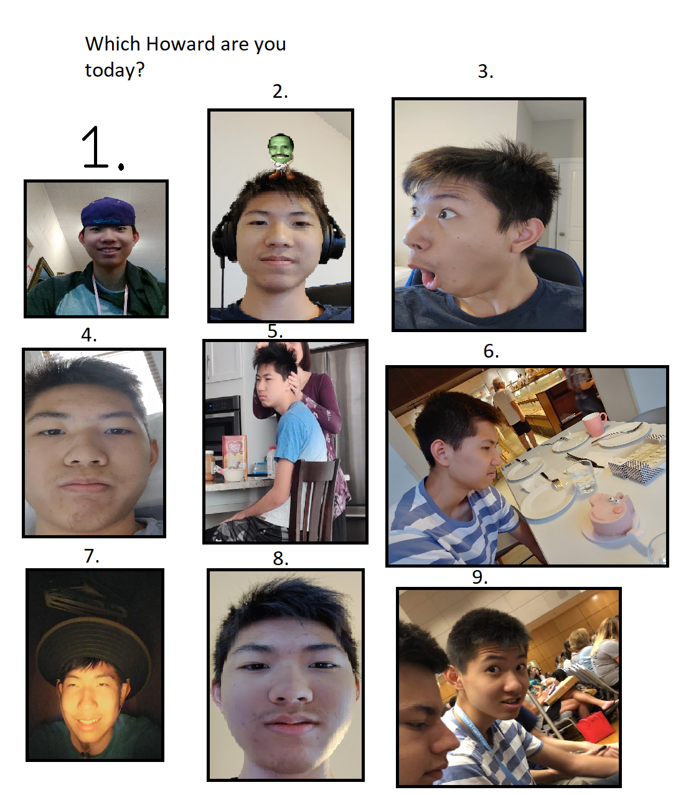

Welcome to the Foxxed Website!
This site is still being constructed!
If you have any ideas, DM at Troy#7511 on Discord or email me at invictusfanboy@gmail.com.
Most Recent Memes

Which Howard Are You Today?
Created by Leo Coronado, this picture shows 9 different pictures of Howard in different emotional states. When posted in Foxxed, members would respond with the number that best reflects how they feel at that moment.

Browless Robert
Edited by Kyle Firman, this picture shows just how much eyebrows can change your appearance. It has been immortalized into Foxxed as an emoji.
Original picture credits: Leo Coronado

Indian Frank
Created by Frank, this picture is a disturbingly accurate portrayal of Frank as an Indian man.